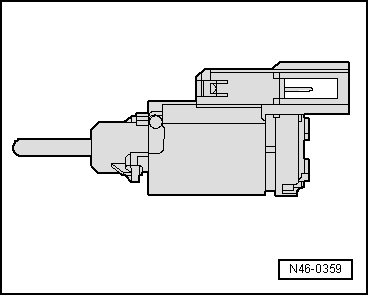
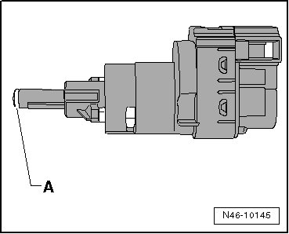
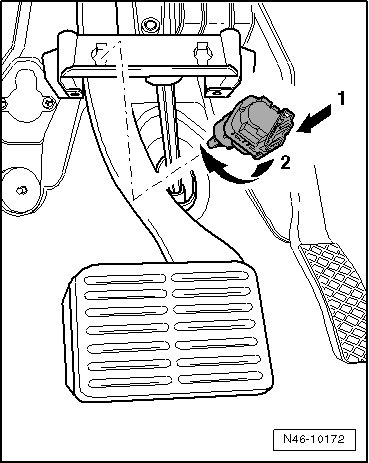

Brake Light Switch: Adjustments
Brake Light Switch and Brake Pedal Switch
--> [ Previous Version ]
--> [ New Version ]
• Vehicles from 11.06 do not have a brake light switch. The signal is generated by the brake pressure sensor 1 (G201) and brake pressure release solenoid (F84).
Previous Version
• After removing the old brake light switch (see illustration N46-0359) it should be replaced with a new one (see illustration N46-10145).
• Distinguishing characteristics.

Removing
- Remove the driver side trim.
- Disconnect connector from brake light switch.
The brake light switch must only be removed when plunger is pressed (brake pedal not operated), otherwise the retainer on the brake light switch will be damaged.
- Remove brake light switch by turning 45° to the left.
Installing, Adjusting and Locking
Because the old brake light switch is no longer used.
New Version
• Only use a NEW brake light switch.
• The most noticeable difference is the new brake light switch has a clear rounded end on the plunger head- A -.

Removing
- Remove the driver side trim.
- Disconnect connector from brake light switch.
The brake light switch must only be removed when plunger is pressed (brake pedal not operated), otherwise the retainer on the brake light switch will be damaged.
- Remove brake light switch by turning 45° to the left.
Installing, Adjusting and Locking
Before installing the brake light switch, grease the clear rounded end on the plunger head with polycarbamide grease (G 052 142 A2).
• When installing brake light switch, brake pedal must always remain in rest position. The brake pedal may only be touched with the brake light switch plunger head during the entire assembly procedure.
• The assembly openings are arranged vertically in the illustration. The are arranged horizontally from Vehicle Identification Number (VIN) 7L-6-053 601.
- Guide the brake light switch through assembly opening - arrow 1 - and press it against the pedal with the plunger head. Then turn the brake light switch 45° to the right - arrow 2 -, until it noticeably engages.

- Connect brake light switch connector.
- Check function of brake light.
- Install trim on driver side.